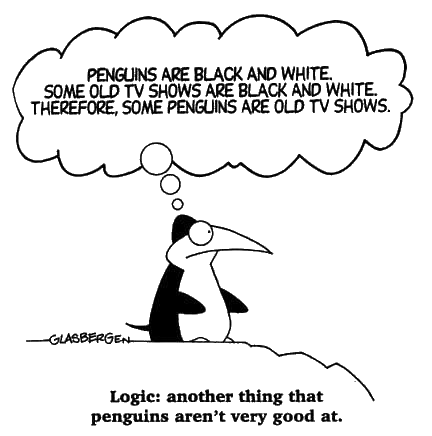

Logic Language

Language
- Various logics
- Classical, modal, temporal, ...
- Order
- Propositional, 1st order, higher order
- Classical first-order and higher-order logic
- Can only semi-decide on the theoremhood of a statement
- TPTP languages:
CNF, FOF, TF0, TF1, TFA, TH0, TH1